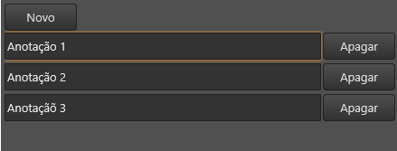
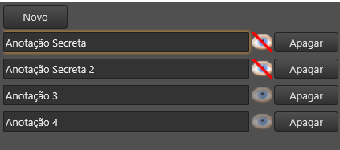
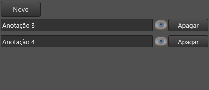

Criar um botão que esconde itens de uma lista dinâmica
Criar um botão que esconde itens de uma lista dinâmica de alguns usuários.
Atenção: Este é um tópico avançado e requer o conhecimento de como criar uma lista dinâmica.
Este tipo de funcionalidade é útil quando em uma ficha ou em uma janela acoplável é necessário esconder certos itens de certos usuários, por exemplo:
- NPCs - Talvez o mestre queira esconder determinado NPC dos jogadores
- Equipamentos - Talvez um jogador de um grupo possua um equipamento que o Mestre deseja que os demais jogadores não saibam de sua existência.
- Uma anotação secreta, que somente o mestre pode visualizar.
Começando....
Vamos supor que você já tenha implementado em seu código uma lista dinâmica com a seguinte aparência:

e com o seguinte código:
| Arquivo Principal “ficha.lfm” |
|---|
| \<?xml version="1.0" encoding="UTF-8"?> \<form name="frmFichaTeste"> \<layout align="top" height="30"> \<button align="left" text="Novo" onClick="self.rclLista:append();"/> \</layout> \<recordList name="rclLista" align="client" field="itens" templateForm="frmItem"/> \</form> |
| Arquivo Secundário “item.lfm” |
|---|
| \<?xml version="1.0" encoding="UTF-8"?> \<form name="frmItem" height="30" margins="{top=2,bottom=2}"> \<edit align="client" field="descricao" margins="{right=2}"/> \<button align="right" text="Apagar" width="80" onClick="ndb.deleteNode(sheet);"/> \</form> |
Próximos passos
Para adicionar a funcionalidade de esconder item, você deverá fazer as seguintes alterações em seu arquivo equivalente ao "item.lfm" (aquele que repete para cada item na lista):
- Criar um botão novo ou outra funcionalidade que permita o usuário clicar e realizar uma ação. Neste tutorial usaremos a tag imageCheckBox pelo simples fato de eu achá-la bacana =).\
| \<imageCheckBox name="cbxInvisivel" align="right" width="25" margins="{left=2, right=2}" checkedImage="images/invisivel.png" uncheckedImage="images/visivel.png" autoChange="false" onClick="self:alternarVisibilidade();" /> |
|---|
\ Esta é a imagem "images/invisivel.png": \ Esta é a imagem "images/visivel.png: \ Note que a propriedade autoChange foi setada para false para que a tag não mude automaticamente sua propriedade "checked".
Note também que ao clicar no imageCheckBox, será invocada a função "self:alternarVisibilidade"
- Criar o código da função "self:alternarVisibilidade" que utiliza a função ndb.setPermission
| \<script> function self:alternarVisibilidade() if self.cbxInvisivel.checked then -- o imageCheckbox está marcando como invisivel.. -- Vamos mudar as permissões para tornar visivel então.. -- resetar as permissões de read dos jogadores e espectadores ndb.setPermission(sheet, "group", "jogadores", "read", nil); ndb.setPermission(sheet, "group", "espectadores", "read", nil; else -- o imageCheckbox está marcando como visível -- Vamos mudar as permissões para tornar invisível então... -- negar as permissões de read dos jogadores e espectadores ndb.setPermission(sheet, "group", "jogadores", "read", "deny"); ndb.setPermission(sheet, "group", "espectadores", "read", "deny"); end; end; \</script> |
|---|
- Criar um código que fica responsável por atualizar o estado do imageCheckBox conforme as permissões existentes e alteradas:\ \
| \<script> function self:atualizarCbxInvisivel() -- Esta função é chamada em vários pontos para atualizar o estado do checkbox de invisibilidade -- Marcar o checkbox se existir uma permissão "read deny" para jogadores ou para espectadores self.cbxInvisivel.checked = ndb.getPermission(sheet, "group", "espectadores", "read") == "deny" or ndb.getPermission(sheet, "group", "jogadores", "read") == "deny"; -- Permitir o click no checkbox apenas se o usuário atual possuir a permissão "writePermissions" self.cbxInvisivel.enabled = ndb.testPermission(sheet, "writePermissions"); end; \</script> |
|---|
\ Veja também:
-
- Função ndb.getPermission
- Função ndb.testPermission
- Criar um NodeObserver que será responsável por invocar a função acima "self:atualizarCbxInvisivel" quando ocorrer alguma mudança nas permissões do NodeDatabase. O NodeObserver será criado no evento onScopeNodeChanged da tag Form
| \<event name="onScopeNodeChanged"> if self.observer ~= nil then -- Já tinhamos criado um observer, vamos desativá-lo. self.observer.enabled = false; self.observer = nil; end; if sheet ~= nil then -- O form foi ligado a um NodeDatabase! -- Vamos criar um NodeObserver para este nodo. self.observer = ndb.newObserver(sheet); self.observer.onPermissionListChanged = function(node) -- Esta função será chamada quando -- as definições de permissões de sheet mudarem self:atualizarCbxInvisivel(); end; self.observer.onFinalPermissionsCouldBeChanged = function(node) -- Esta função será chamada quando -- minhas permissões em sheet puderem -- ter sido afetadas por alterações de permissões -- no NodeDatabase ou porque me tornei * -- mestre/jogador/espectador self:atualizarCbxInvisivel(); end; -- Devemos atualizar o checkbox agora também * self:atualizarCbxInvisivel(); end; \</event> |
|---|
Resultado final
O que aparece para os Mestres da mesa:

O que os Jogadores e Espectadores da mesa veem:

Código fonte final (sem os comentários)
| Arquivo Principal “ficha.lfm” |
|---|
| \<?xml version="1.0" encoding="UTF-8"?> \<form name="frmFichaTeste"> \<layout align="top" height="30"> \<button align="left" text="Novo" onClick="self.rclLista:append();"/> \</layout> \<recordList name="rclLista" align="client" field="itens" templateForm="frmItem"/> \</form> |
| Arquivo Secundário “item.lfm” |
|---|
| \<?xml version="1.0" encoding="UTF-8"?> \<form name="frmItem" height="30" margins="{top=2,bottom=2}"> \<script> function self:alternarVisibilidade() if self.cbxInvisivel.checked then ndb.setPermission(sheet, "group", "jogadores", "read", nil); ndb.setPermission(sheet, "group", "espectadores", "read", nil); else ndb.setPermission(sheet, "group", "jogadores", "read", "deny"); ndb.setPermission(sheet, "group", "espectadores", "read", "deny"); end; end; function self:atualizarCbxInvisivel() self.cbxInvisivel.checked = ndb.getPermission(sheet, "group", "espectadores", "read") == "deny" or ndb.getPermission(sheet, "group", "jogadores", "read") == "deny" self.cbxInvisivel.enabled = ndb.testPermission(sheet, "writePermissions"); end; \</script> \<edit align="client" field="descricao" margins="{right=2}"/> \<imageCheckBox name="cbxInvisivel" align="right" width="25" margins="{left=2, right=2}" checkedImage="images/invisivel.png" uncheckedImage="images/visivel.png" autoChange="false" onClick="self:alternarVisibilidade();" /> \<button align="right" text="Apagar" width="80" onClick="ndb.deleteNode(sheet);"/> \<event name="onScopeNodeChanged"> if self.observer ~= nil then self.observer.enabled = false; self.observer = nil; end; if sheet ~= nil then self.observer = ndb.newObserver(sheet); self.observer.onPermissionListChanged = function(node) self:atualizarCbxInvisivel(); end; self.observer.onFinalPermissionsCouldBeChanged = function(node) self:atualizarCbxInvisivel(); end; self:atualizarCbxInvisivel(); end; \</event> \</form> |
Created with the Personal Edition of HelpNDoc: Maximize Your Productivity with HelpNDoc's Efficient User Interface